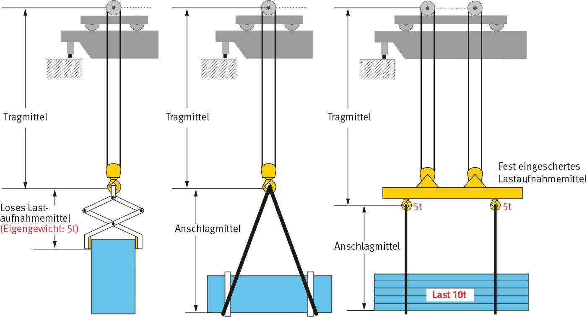

2 Begriffsbestimmungen
Im Sinne dieser DGUV Regel werden folgende Begriffe bestimmt:
- Hebezeugbetrieb ist der Betrieb von
- Kranen,
Begriffsbestimmung für Krane siehe § 2 der DGUV Vorschrift 52 und 53 "Krane", Begriffsbestimmung für Schwimmkrane siehe § 2 der DGUV Vorschrift 64 "Schwimmende Geräte".
- Ladegeschirren,
Begriffsbestimmung für Ladegeschirre siehe § 2 der DGUV Vorschrift 36 und 37 "Hafenarbeit". Ladegeschirre sind bordeigene Hebeeinrichtungen von Wasserfahrzeugen, zum Beispiel Bordkrane, Ladebäume mit Winden.
- Bauaufzügen, deren Lastaufnahme- oder Anschlagmittel ungeführt an Tragmitteln hängt,
Begriffsbestimmung für Bauaufzüge siehe Abschnitt 2 des Kapitels 2.30 "Betreiben von Bauaufzügen zur Beförderung von Gütern" der DGUV Regel 100-500 und 100-501.
- Baggern, soweit sie zum Heben und Transportieren von Einzellasten, insbesondere mit Hilfe von Anschlagmitteln oder Lastaufnahmemitteln, bestimmt sind, wobei zum Anschlagen, Führen, Positionieren oder Lösen der Last die Mithilfe von Personen erforderlich ist,
Begriffsbestimmung für Bagger siehe Abschnitt 2 des Kapitels 2.12 "Betreiben von Erdbaumaschinen" der DGUV-Regel 100-500 und 100-501 "Betreiben von Arbeitsmitteln".
- Winden, Hub- und Zuggeräten zum Heben von Lasten, deren Lastaufnahme- oder Anschlagmittel ungeführt an Tragmitteln hängt,
Begriffsbestimmung für Winden, Hub- und Zuggeräte siehe § 2 der DGUV Vorschrift 54 und 55 "Winden, Hub- und Zuggeräte".
- anderen Maschinen, die vom Hersteller auch zum ungeführten Heben von Lasten vorgesehen sind, zum Beispiel geländegängige Stapler mit veränderlicher Reichweite (Teleskopstapler).
- Lastaufnahmeeinrichtungen sind Lastaufnahmemittel, Anschlagmittel und Tragmittel (siehe Abbildung 1).
- Lastaufnahmemittel sind nicht zum Hebezeug gehörende Einrichtungen, die zum Aufnehmen der Last mit dem Tragmittel des Hebezeugs verbunden werden können. Es wird unterschieden zwischen form- und kraftschlüssig wirkenden Lastaufnahmemitteln.
Zu den Lastaufnahmemitteln gehören zum Beispiel Brooken, C-Haken, Container-Geschirre (Spreader), Gehänge, Gießpfannen, Greifer, Klauen, Klemmen, Kübel, Krangabeln, Lasthebemagnete, Traversen, Vakuumheber, Zangen.
- Kraftschlüssig wirkende Lastaufnahmemittel sind Lastaufnahmemittel, die die Last durch Magnet-, Saug- oder Reibungskräfte halten.
- Formschlüssig wirkende Lastaufnahmemittel tragen die Last ohne kraftschlüssige Komponenten ausschließlich über das Zusammenwirken der geometrisch abgestimmten Formen, zum Beispiel durch Umfassen oder Unterfassen.
- Anschlagmittel sind nicht zum Hebezeug gehörende Einrichtungen, die eine Verbindung zwischen Tragmittel und Last, Lastaufnahmemittel und Last oder Tragmittel und Lastaufnahmemittel herstellen.
Zu den Anschlagmitteln gehören zum Beispiel Endlosseile (Grummets), Hakenketten, Hakenseile, Hebebänder, Kranzketten, Ösenseile, Ringketten, Rundschlingen, Seilgehänge, außerdem lösbare Verbindungsteile, zum Beispiel Schäkel und andere Zubehörteile.
- Tragmittel sind mit dem Hebezeug dauernd verbundene Einrichtungen zum Aufnehmen von Lastaufnahmemitteln, Anschlagmitteln oder Lasten.
Zu den Tragmitteln gehören zum Beispiel Hubseil, Lasthaken des Hebezeugs sowie fest eingebaute Greifer, fest eingebaute Traversen, fest eingebaute Zangen.
Art des Lastaufnahmemittels ist gewichtabhängig

Abb. 1 Darstellung von Lastaufnahmeeinrichtungen
- Anschlagpunkte sind lösbare oder feste Einrichtungen, die an der Last angebracht werden, damit sie angehoben werden kann.
- Anschlagen von Lasten ist das Verbinden der Last mit dem Tragmittel eines Hebezeugs; dabei werden meist Lastaufnahme- und/oder Anschlagmittel verwendet.
- Maschinenführer/Maschinenführerin ist die Person, die einen Kran oder ein anderes Gerät im Hebezeugbetrieb steuert, wie unter Nr. 1 aufgeführt.